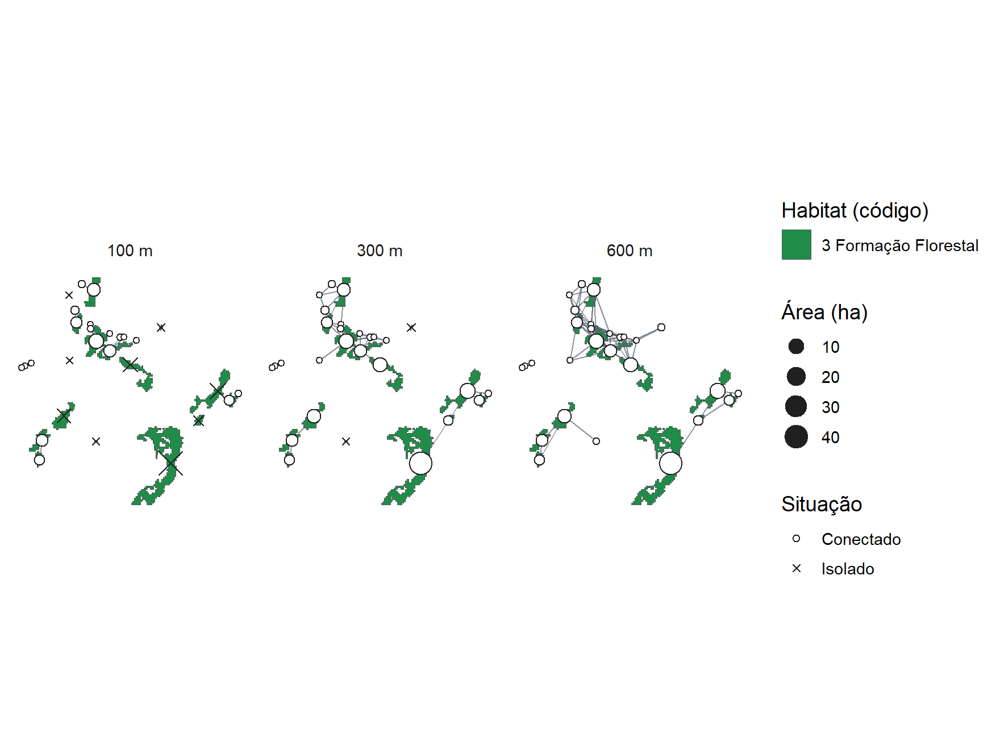
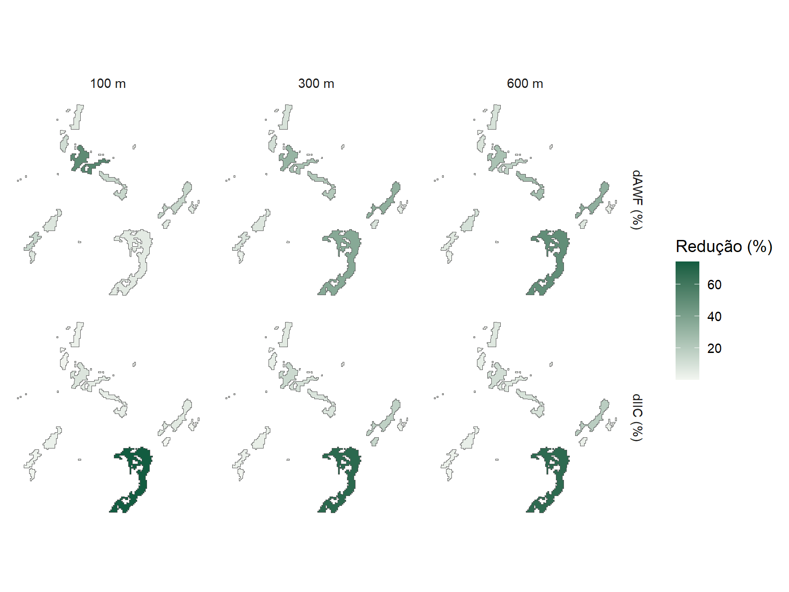
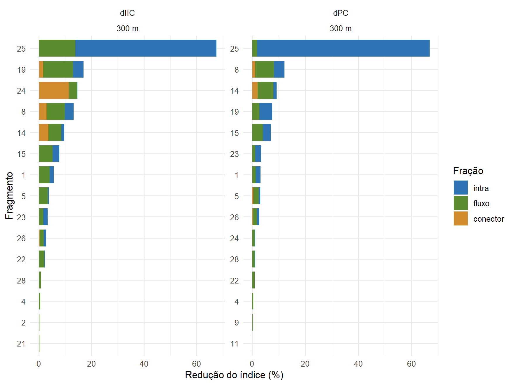

Capítulo 10 Vetorização e conectividade
Fragmentos como polígonos
Para analisar a conectividade, os fragmentos precisam virar polígonos.
reclass_to_polygons() faz essa conversão a partir dos mapas reclassificados e
guarda área, ano e identidade da classe. Aqui, a floresta de 2024:
poligonos <- reclass_to_polygons(metricas, years = 2024, save_shp = FALSE)São 28 fragmentos, que somam 107 ha.
Com save_shp = TRUE, cada ano também é gravado como shapefile.
Conectividade em vários limiares
land_connectivity() liga os fragmentos que estão mais próximos do que uma
distância máxima, ou seja, a distância que um organismo consegue percorrer fora
da floresta, e calcula os índices de conectividade para cada limiar:
conectividade <- land_connectivity(poligonos, max_dist = c(100, 300, 600))
conectividade$plot
| Distância máxima (m) | Componentes | Fragmentos isolados | IIC (×10⁻³) |
|---|---|---|---|
| 100 | 15 | 9 | 1,40 |
| 300 | 6 | 2 | 1,93 |
| 600 | 4 | 0 | 2,11 |
Para uma espécie que só atravessa 100 m de área aberta, a floresta se divide em 15 grupos desconectados, com 9 fragmentos isolados. Com 300 m, restam 6 grupos, e o índice integral de conectividade (IIC) fica 1 vezes maior. De 300 para 600 m, o ganho é pequeno: para espécies capazes de cruzar cerca de 300 m, a floresta que restou já funciona como uma rede.
Fragmentos prioritários
patch_imp_fast() mede quanto a conectividade cairia se cada fragmento fosse
removido, no cenário escolhido:
cenario_300 <- conectividade$scenarios[["300"]]$land
importancia <- patch_imp_fast(cenario_300, metric = "IIC")A perda de qualquer um dos dois fragmentos mais importantes reduziria o IIC em 67,5% e 17,0%, respectivamente, enquanto 21 dos 28 fragmentos reduzem menos de 5% cada. A conectividade da floresta depende, portanto, da conservação de poucos fragmentos.
land_connectivity() já calcula essa priorização para cada limiar, e o mapa
mostra quanto o índice cairia sem cada fragmento:
conectividade$importance_plot
O IIC segue a definição de Pascual-Hortal e Saura (2006): fragmentos isolados
também contam, pela própria área. O valor do lconnect, que os omite, fica em
conectividade$metrics$IIC_lconnect.
Trampolins e frações da importância
A importância de cada fragmento se divide em três partes (Saura e Rubio, 2010): a área do próprio fragmento (intra), a ligação direta com os demais (fluxo) e o papel de trampolim, quando ele está no melhor caminho entre outros dois (conector). A probabilidade de conectividade (PC; Saura e Pascual-Hortal, 2007) considera caminhos indiretos e é a métrica mais indicada para identificar trampolins. Aqui, com probabilidade de dispersão de 5% a 300 m:
pc <- patch_imp_fast(cenario_300, metric = "PC", p_ref = 0.05, d_ref = 300)
head(pc$fractions) intra flux connector
1 1.8372799110 1.296289587 0.021202358
2 0.0043719360 0.099572204 0.000000000
3 0.0002732374 0.008390369 0.000000000
4 0.0174865998 0.423572717 0.002517258
5 0.5532703550 2.090682973 0.428980516
6 0.0002732213 0.085855429 0.000000000Em 0 fragmentos, mais da metade da importância vem do papel de
conector: são manchas pequenas que valem mais pela posição do que pela área.
Em land_connectivity(), as frações ficam em patch_metrics (colunas
dPC_intra, dPC_flux e dPC_connector) e em fraction_metrics, com os
gráficos fractions_plot e connector_plot:
conectividade_pc <- land_connectivity(poligonos, max_dist = 300,
metric_patch = c("IIC", "PC"), p_ref = 0.05, d_ref = 300)
conectividade_pc$fractions_plot
O PC é o índice mais custoso. Em paisagens com centenas de fragmentos,
parallel = 4 (ou outro número de processos) divide o cálculo entre núcleos e
dá o mesmo resultado; com poucas dezenas de fragmentos, abrir os processos custa
mais do que economiza. A poda exata das ligações do PC (prune = "auto") já é
aplicada sozinha a partir de 50 fragmentos.
Área conectada equivalente e frações da paisagem
A área conectada equivalente (ECA; Saura et al., 2011) traduz o IIC e o PC em
hectares: é a área de um único fragmento que daria a mesma conectividade. Em
metrics, ECA_IIC e ECA_PC vêm em m², e ECAnorm_IIC e ECAnorm_PC a
expressam em porcentagem do habitat. As colunas PC_intra, PC_direct e
PC_step dividem o índice, como no Makurhini, entre a área dos próprios
fragmentos, as ligações diretas e o ganho por trampolins. Prot, ProtConn,
ProtUnconn e RelConn seguem o ProtConn (Saura et al., 2017), tomando a
floresta como área protegida:
| ECA (ha) | ECA (% do habitat) | Intra (%) | Direta (%) | Trampolins (%) | ProtConn |
|---|---|---|---|---|---|
| 49,7 | 46,5 | 84,5 | 12 | 3,5 | 4 |